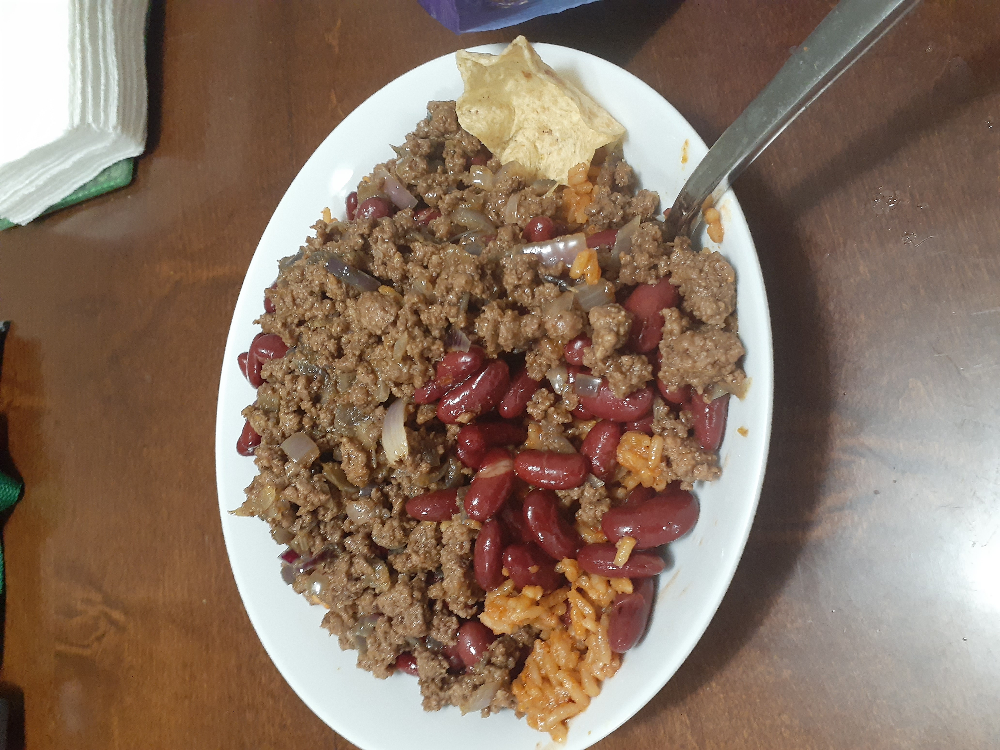

Rice, Beans, Meat

Description
Rice, beans, and ground beef. It doesn't get any simpler than this. Grab a pan and something to cook rice and get started with this recipe.
Ingredients
- 1 lb ground beef
- 1 packet of rice (microwaveable or otherwise)
- 1 can of beans (kidney beans are prefered)
- 1/2 onion (optional)
- 1 seasoning packet (optional)
Steps
- Dice the onion if desired
- Oil a pan over medium-high heat and put the onion in to caramelize
- Once mostly caramelized, add ground beef to pan
- Separate ground beef into smaller parts using a spoon or other utensil to ensure everything gets cooked fully
- Add in seasoning packet if desired and continue to monitor ground beef
- Once ground beef is completely cooked, drain can of beans and add just the beans to the pan
- Lower heat to low-medium to keep beans and meat warm
- Microwave or otherwise cook rice (start this step as early as desired to everything is ready at the same time)
- Add rice to a large bowl and beans and meat on top
- Eat with a fork or chips
Home